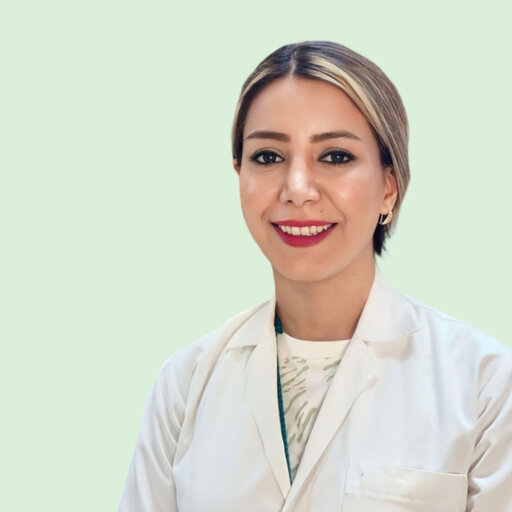

Classical foundations.
Contemporary scholarship.
Ananta AyurHeart brings together classical Ayurveda, clinical thinking, academic research and accessible education. Its work supports authentic traditional knowledge while encouraging rigorous scholarship, responsible innovation and international exchange.
Rooted in tradition
Driven by inquiry
Ayurveda across four connected domains.
Clinical Ayurveda
Clinically grounded understanding of Ayurvedic principles, Panchakarma and person-centred care.
Research
Scholarship spanning Panchakarma, gut health, integrative medicine, digital health and traditional knowledge.
Education
Accessible learning in Ayurveda, Samhita, Panchakarma, Sanskrit and related knowledge systems.
Our people
Two independent academic profiles connected by a shared commitment to Ayurveda, scholarship and international education.
Dr. Avvinish Annant Narine
Ph.D. (Panchkarma) · MD (Panchkarma) · BAMS
Ayurveda physician, Assistant Professor and Panchakarma researcher; Editor-in-Chief of JARI.

Dr. Fatemeh Moazzamipeiro
MD (Ayurveda) · BAMS
Ayurveda physician, researcher and educator; Founder & CEO of Ananta AyurHeart and Managing Editor of JARI.
Learning across languages and traditions.
Ananta AyurHeart Academy supports learning in Ayurveda fundamentals, Samhita & Maulik Siddhant, Panchakarma principles, Bhagavad Gita studies, Sanskrit, preventive healthcare and traditional knowledge systems across English, Persian, Hindi and Sanskrit.
Knowledge in context
Education without losing authenticity.
Teaching is designed to make classical concepts understandable across cultures while preserving terminology, context and scholarly integrity.
Follow the work.
Educational updates, academic content, workshops and collaborations from Ananta AyurHeart.